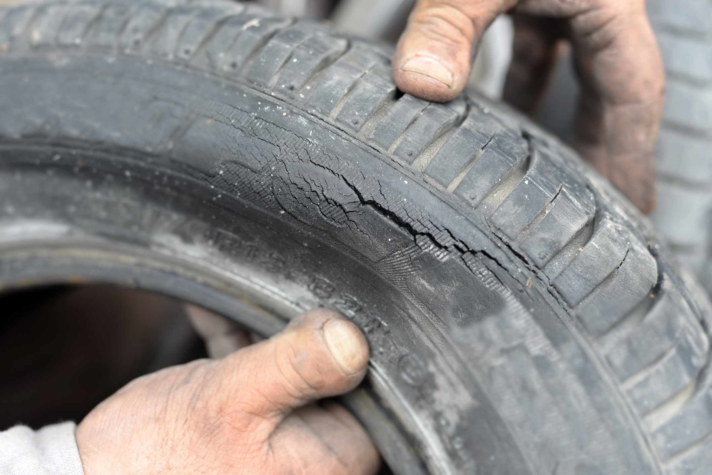

Los Peligros de Conducir con Neumáticos Desgastados
05 de Junio, 2025 | Mantenimiento
El estado de tus neumáticos es clave para la seguridad. Identifica las señales de desgaste y cuándo es el momento crítico para reemplazarlos.
1. Aumento del Riesgo de Aquaplaning
El dibujo es vital para evacuar el agua. Con poco dibujo, el neumático flota sobre el agua, perdiendo totalmente el control del vehículo.

2. Distancia de Frenado Excesiva
Un neumático desgastado necesita mucha más distancia para detenerse, especialmente en pavimento mojado. Esto es la principal causa de choques por alcance.

3. Mayor Probabilidad de Pinchazos
Cuanto más fina es la goma, más vulnerable es a objetos afilados. El riesgo de un reventón a alta velocidad también se incrementa.

4. El Test de la Moneda
Inserta una moneda de un euro en las ranuras del dibujo. Si puedes ver la banda plateada, ¡es hora de cambiar el neumático!

5. Invierte en Seguridad
No pospongas el cambio de neumáticos. Es la única pieza de tu coche que toca la carretera. Pregunta por talleres afiliados a ASISVial.
Preguntar por Talleres Afiliados